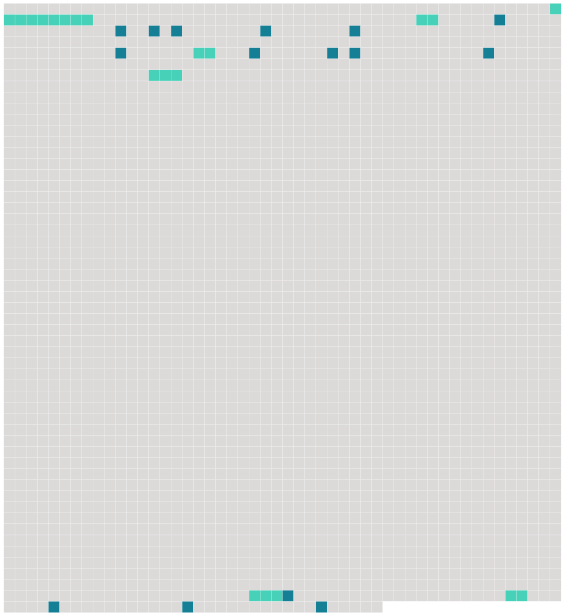

Longueur nb maillons : 21 mentions |
 |
Richelieu n’ avait pas sous la main une autre Mlle de La Fayette pour balancer Mme de Hautefort ; mais, sachant qu’ il fallait toujours à Louis XIII une sorte de distraction sentimentale, un amusement de cœur, il avait mis depuis quelque temps auprès de lui [un jeune homme de la tournure la plus agréable] , le fils d’ un de ses amis les plus dévoués et les plus capables, le marquis et maréchal d’ Effiat, et, se croyant aussi sûr [du fils] que du père, il [lui] avait fait faire un chemin si rapide qu’ à dix-neuf ans, en 1639, [Cinq-Mars] était déjà [grand-écuyer] [Il] avait plu d’ abord au roi par [sa] bonne grâce, et le faible monarque [l’] avait aussi trouvé bien commode à aimer, puisque cela ne lui faisait pas d’ affaire avec M. le cardinal. [1 phrases] Le roi demandait à [Cinq-Mars] de n’ aimer que lui ; [celui -ci] , poussé par [sa] propre ambition et par Richelieu, [demandait] à [son] tour au roi de ne pas partager ses affections, et [il] se plaignait de l’ empire qu’ exerçait encore sur lui Mme de Hautefort. Dans les commencemens, il suffisait d’ une soirée que le roi venait passer chez la reine pour déjouer toutes ces manœuvres, et rendre le cœur de Louis à sa première et irrésistible maîtresse ; mais il n’ en était point ainsi dans les voyages : là, seul entre son redouté ministre et [son nouvel ami] , le roi était bien autrement facile aux impressions qu’ on lui voulait donner, et c’ est dans un de ces voyages que les yeux de la belle dame n’ étant plus là pour plaider sa cause, Richelieu l’ accusa d’ avoir la main dans les intrigues de Monsieur, de troubler et de diviser la cour et de faire obstacle au gouvernement par l’ absolu crédit qu’ on lui supposait sur le roi ; il fit entendre qu’ il était fort inutile d’ avoir exilé Mme de Chevreuse pour garder une personne tout aussi dangereuse qu’ elle. [48 phrases] Bientôt aussi elle vit [l’ ambitieux étourdi] [qui] l’ avait remplacée dans le cœur du roi, parvenu au faîte de la faveur, s’ en précipiter [lui -même] , conspirer la perte de celui auquel [il] devait tout, et, retombé sous la main puissante qui [l’] avait tiré du néant, porter, à vingt-deux ans, [sa] tête sur un échafaud. |
 |
La ressource peut être téléchargée sur la page Ortolang
Si vous avez des questions ou vous voyez des erreurs, merci d'envoyer un mail à silvia.federzoni89@gmail.com
Site développé par S. Federzoni (contact)